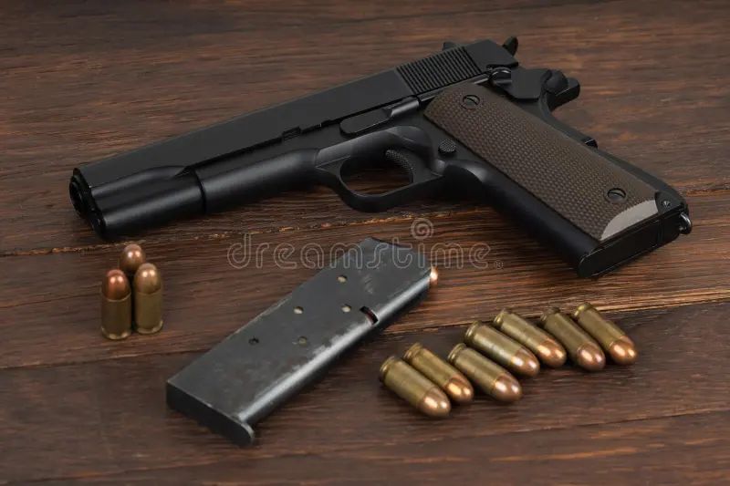

The Colt M1911 is one of the most iconic and enduring firearms in history. Designed by John Moses Browning, it served as the standard-issue sidearm for the United States Armed Forces for 74 years (1911–1985).
| Feature | Standard M1911 / M1911A1 |
|---|---|
| Type | Single-action, recoil-operated semi-automatic pistol |
| Caliber | .45 ACP (Automatic Colt Pistol) |
| Capacity | 7+1 rounds (standard box magazine) |
| Barrel | Length 5 inches (127 mm) |
| Weight | ~2.44 lbs (1.1 kg) unloaded |
| Sights | Fixed blade front, notch rear |